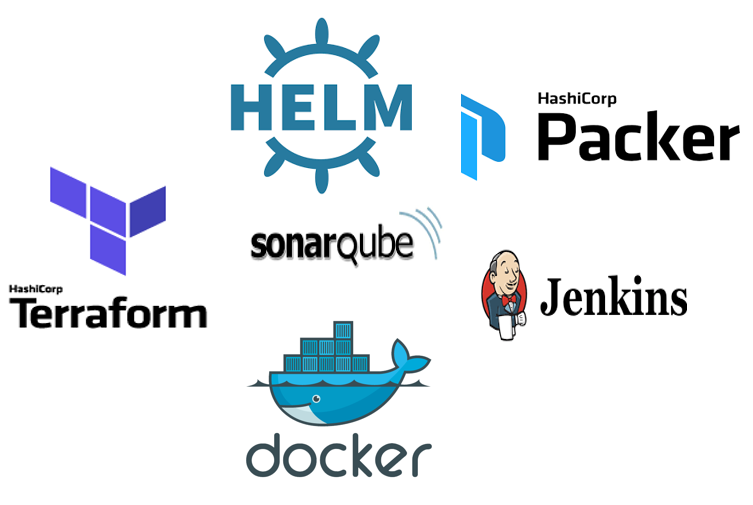

CI-CD pipeline using Jenkins
The accelerator uses Jenkins as an orchestrator to create AMI and instances as well as pipeline Provisioning purpose.

Deploy war file using Open-shift and Helm chart
The accelerator uses managed Kubernetes to deploy application on different platforms.

IAAC using terraform and Packer
The accelerator uses terraform and packer as IAAC to create kubernetes cluster and packer to create AMI.

Container based standard Enterprise Logging - ELK
A templatized ELK setup for centralized logging across Application, Load Balancer, Webserver & Infra. Using pre-defined Logstash patterns for log parsing and actionable analysis
Visit